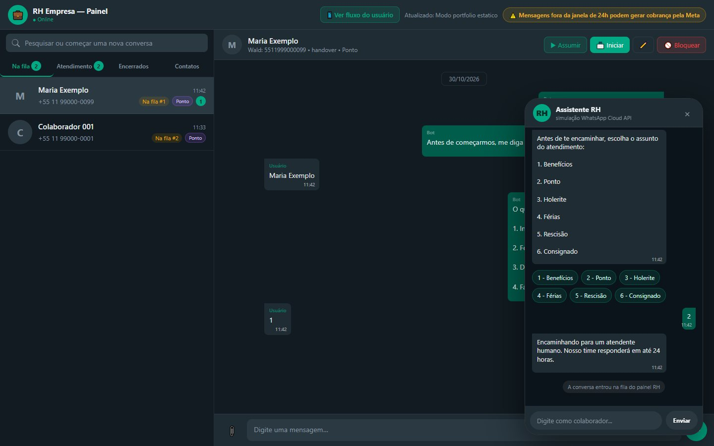
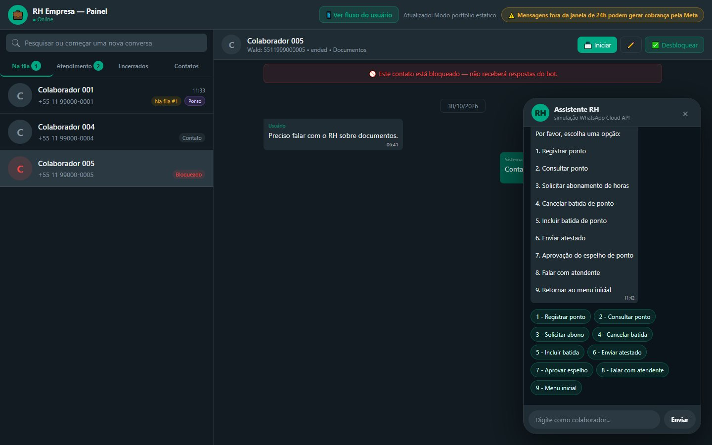
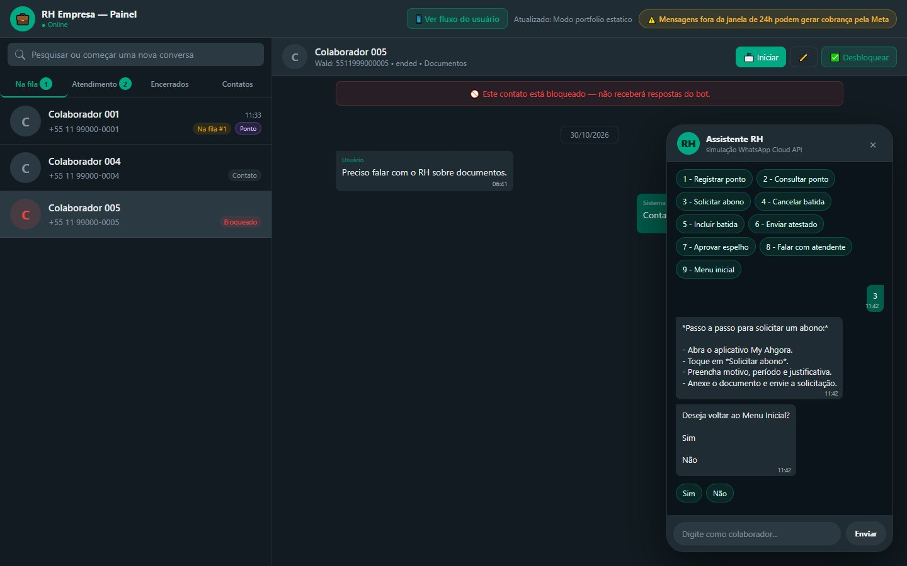
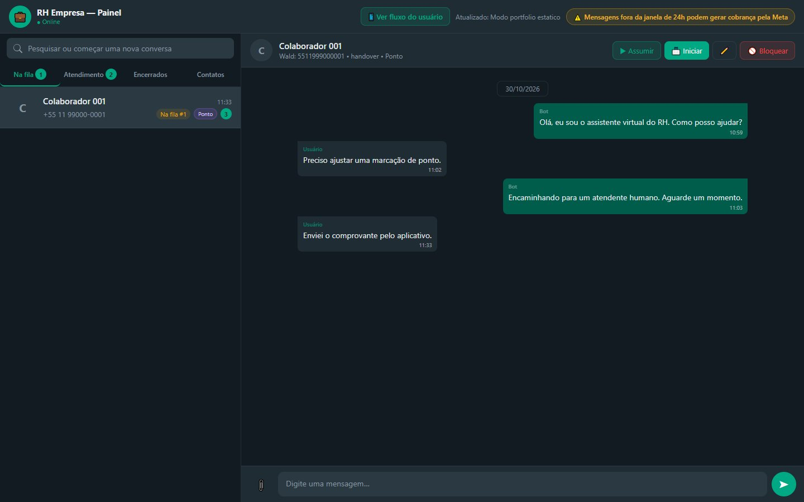
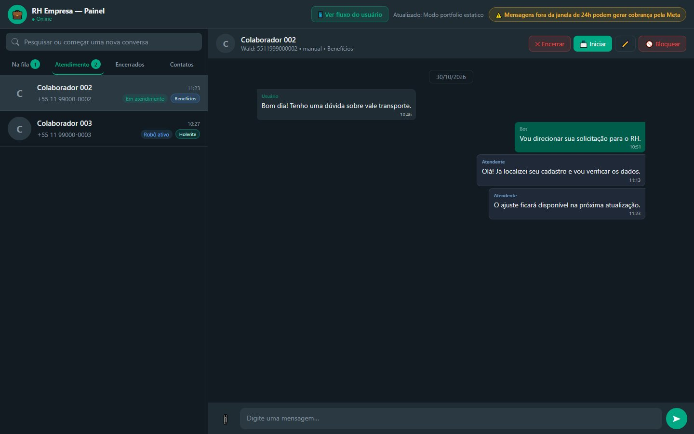
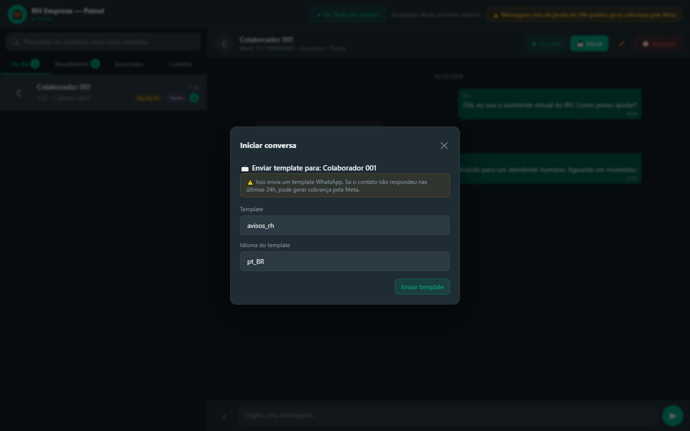
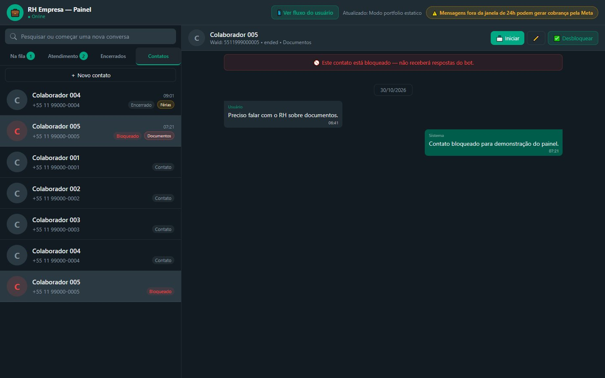

O RH no WhatsApp: o robô responde, a equipe assume.
Um bot de atendimento de RH integrado à API oficial do WhatsApp da Meta. O colaborador resolve sozinho as dúvidas de ponto, folha e benefícios com tutoriais passo a passo; quando precisa de uma pessoa, escolhe o assunto e entra numa fila que o RH acompanha num painel parecido com o WhatsApp Web.

As mesmas perguntas, todos os dias, pelo WhatsApp.
Como bato o ponto? Onde vejo o espelho? Como envio um atestado? Onde está o informe de rendimentos? Boa parte das dúvidas que chegam ao RH tem uma resposta conhecida, que mora num aplicativo de ponto (Multi / My Ahgora) ou no portal Meu RH. Outra parte precisa de alguém olhando o caso.
O bot resolve o que é passo a passo e entrega ao RH, já organizado, o que precisa de gente.
Menus e tutoriais
Ponto, folha e benefícios em menus numerados, com o passo a passo e um vídeo curto para cada tarefa.
Atendimento no navegador
O RH vê a fila, assume a conversa, responde com texto ou anexo, encerra e bloqueia, tudo pelo mesmo número oficial.
O robô conduz, mas nunca atropela a pessoa.
Quatro regras aparecem em todo o código, do webhook ao painel:
Quando o RH assume, o bot fica em silêncio
No estado manual o webhook só registra a mensagem e não responde. Enviar qualquer mensagem pelo painel já tira a conversa da fila e a coloca nesse estado.
Nenhuma conversa fica presa
Resposta inválida devolve o menu; inatividade de 3 minutos encerra o atendimento automático; quem está na fila pode voltar ao menu a qualquer momento.
O painel sobrevive a um reinício
Mensagens, contatos, assuntos e bloqueios ficam no MongoDB. Ao subir o servidor, o histórico é recarregado e o status de cada conversa é deduzido das mensagens.
Respeitar os limites da Meta
Envios em fila por destinatário, com intervalo mínimo e nova tentativa, e um aviso fixo no painel: mensagens fora da janela de 24 horas podem ser cobradas.
Do “olá” ao tutorial ou à fila, em poucos toques.
Toda conversa nova começa com a saudação e o pedido do nome completo (pelo menos duas palavras com letras). Quem já informou o nome antes vai direto ao menu. A partir daí, cada resposta numérica leva a um tutorial, a um submenu ou à fila humana.
| Menu | Opções | O que acontece |
|---|---|---|
| Menu inicial | Ponto · Folha & Benefícios · Dúvidas sobre holerite · Falar com atendente | Abre o submenu, inicia a coleta do holerite ou pede o assunto do atendimento |
| Ponto | Registrar ponto · Consultar ponto · Solicitar abonamento de horas · Cancelar batida · Incluir batida · Enviar atestado · Aprovação do espelho · Falar com atendente · Retornar ao menu | As opções 1 a 7 enviam o tutorial e perguntam se a pessoa quer voltar ao menu inicial |
| Folha & Benefícios | Histórico de pagamentos · Histórico salarial · Informe de rendimentos · Falar com atendente · Retornar ao menu | As opções 1 a 3 enviam o tutorial; 4 vai para o atendimento; 5 volta ao início |
| Assunto do atendimento | Benefícios · Ponto · Folha de pagamento · Férias · Rescisão · Consignado | Aceita o número ou o texto (“batida”, “demissão”, “salário”…) e etiqueta a conversa no painel |


Uma máquina de estados por número de WhatsApp.
Cada conversa guarda em que ponto o colaborador está. São 14 estados, de idle a ended, e cada mensagem recebida é interpretada à luz do estado atual: o mesmo “1” significa Ponto no menu inicial e “Registrar ponto” no submenu.
Bot no comando
await_user_name, await_main_choice, await_ponto_choice, await_folha_choice, await_back_menu.
Com o RH ou encerrada
manual (o bot não responde), ended e idle (a próxima mensagem recomeça com a saudação).
A dúvida sobre holerite
É o único caminho que coleta material antes de chegar ao RH. A conversa já recebe a etiqueta Holerite e só segue quando tem as duas peças:
O colaborador escolhe a opção 3
o assunto é gravado na hora, sem perguntar
Escreve a dúvida em texto
se mandar a imagem primeiro, o bot aceita e pede o texto
Envia um print do holerite
enquanto faltar a imagem, o bot volta a pedir
Confirmação e encaminhamento
após 3 segundos, a conversa entra na fila e o RH recebe o e-mail
Regras que evitam becos sem saída
Resgate de contexto
Se o estado se desalinhar mas o último menu enviado (há menos de 5 minutos) foi Ponto ou Folha, um número válido é redirecionado para o submenu certo.
Quem escreve na fila
Escolhe entre voltar ao menu inicial (e sair da fila) ou continuar aguardando, sem ocupar duas posições na fila.
Inatividade
Três minutos sem resposta encerram o atendimento automático com uma mensagem de agradecimento. O cronômetro não corre para quem está na fila ou com o RH.
Contato bloqueado
As mensagens de números bloqueados são ignoradas logo na entrada do webhook, antes de qualquer resposta.
Um webhook para ouvir, a Graph API para responder.
O servidor conversa com a Meta pela WhatsApp Cloud API (Graph API v22.0). A Meta entrega cada mensagem do colaborador no webhook; o servidor responde, registra e avisa o painel em tempo real.
| Ação | Chamada | Detalhe |
|---|---|---|
| Verificar o webhook | GET /webhook | Confere hub.verify_token e devolve o hub.challenge; senão, 403 |
| Receber mensagem | POST /webhook | Lê texto, resposta de botão ou lista, imagem, documento, áudio, voz, vídeo e figurinha; responde 200 mesmo em erro, para a Meta não reenviar |
| Responder em texto | /{PHONE_NUMBER_ID}/messages | Mensagens do bot e do atendente, com registro de quem enviou |
| Enviar anexo | /{PHONE_NUMBER_ID}/media → /messages | Sobe o arquivo (até 16 MB) e envia pelo id como imagem, vídeo, áudio ou documento |
| Iniciar conversa | /messages com type: template | Template aprovado pela Meta, com nome e idioma configuráveis (padrão avisos_rh, pt_BR) |
| Ver mídia recebida | GET /{mediaId} | Busca a URL temporária da Meta e repassa o arquivo ao navegador, sem expor o token |
Limite de envio
#131056, pair rate limit).Um WhatsApp Web feito para a fila do RH.
O painel é uma página servida pelo próprio servidor em /admin, em HTML, CSS e JavaScript puro. A lista lateral se divide em quatro abas, com contadores, busca e etiquetas de status e de assunto em cada conversa.
Atendimento
Conversas com o RH e conversas em que o robô ainda está ativo.
Encerrados
Atendimentos finalizados pelo RH, pelo colaborador ou por inatividade.
Contatos
Nome e telefone de exibição editáveis; o WaId real não muda.
| Ação no painel | O que faz |
|---|---|
| Assumir | Tira da fila, para o cronômetro de inatividade e envia “Atendimento Humano iniciado, nome. Pode me explicar sua dúvida?” |
| Responder | Texto ou anexo (imagem, vídeo, áudio ou documento); a primeira resposta já assume a conversa |
| Encerrar | Envia a mensagem de encerramento; a próxima mensagem do colaborador recomeça o fluxo |
| Iniciar | Envia um template para abrir a conversa fora da janela de 24 horas, com aviso de possível cobrança |
| Bloquear / desbloquear | Encerra a conversa e faz o bot ignorar o número |
Para ficar ao vivo, o painel combina Server-Sent Events (com sinal a cada 25 segundos para atravessar proxies) e uma consulta periódica a cada 5 segundos. Uma “impressão digital” da lista e da conversa aberta evita redesenhar a tela quando nada mudou, o que fazia as imagens piscarem.




Memória para responder rápido, Mongo para não esquecer.
O fluxo do bot roda sobre estruturas em memória (estado, fila, sessões de holerite, cronômetros). Tudo o que o painel precisa depois de um reinício é espelhado no MongoDB Atlas, sem travar a resposta ao colaborador: se o banco oscilar, o bot continua respondendo.
| Coleção | O que guarda | Por que existe |
|---|---|---|
messages | Uma mensagem por documento: número, data, autor (user, bot, human, system), texto e dados da mídia | Histórico completo no painel, mesmo após um deploy |
contacts | Nome e telefone de exibição por WaId | O bot não pede o nome de novo a quem já se identificou |
topics | Assunto do atendimento humano | A etiqueta volta junto com a conversa |
blocked | Números bloqueados | O bloqueio continua valendo depois de reiniciar |
Nenhum segredo no código; nenhum dado real na vitrine.
Token, identificador do número, senhas e endereços ficam em variáveis de ambiente, e o painel do RH só abre com login. Na inicialização, os logs mostram apenas o tamanho do token e da senha de e-mail, para confirmar que foram carregados sem expor o valor.
Painel do RH com login
Todo o /admin (painel, conversas, contatos, envio de mensagens e anexos, atualizações ao vivo) e as rotas de teste exigem usuário e senha, vindos de ADMIN_USER e ADMIN_PASSWORD. Sem essas variáveis, o painel fica bloqueado, nunca aberto. A comparação da senha é feita em tempo constante.
Webhook aberto só para a Meta
O /webhook continua acessível, porque é por ele que a Meta entrega as mensagens; a verificação inicial usa o VERIFY_TOKEN da variável de ambiente.
Variáveis de ambiente
WHATSAPP_TOKEN, PHONE_NUMBER_ID, VERIFY_TOKEN, MONGODB_URI, SMTP_USER, SMTP_PASS, NOTIFY_TO, NOTIFY_FROM, além de nomes de template e ajustes de envio.
Mídia sem expor o token
Arquivos recebidos são buscados pelo servidor e repassados ao navegador; o painel nunca vê a credencial da Meta. Os uploads temporários são apagados após o envio.
No servidor, a Meta; aqui, tudo no navegador.
- webhook verificado
- texto, mídia e templates
- 22 rotas e máquina de estados
- painel /admin com SSE
- e-mail ao RH a cada chamado
- mensagens e contatos
- assuntos e bloqueios
Nesta demonstração não há servidor. O painel substitui fetch e EventSource por versões locais que respondem com conversas inventadas, então assumir, responder, encerrar, bloquear, editar contato e iniciar por template funcionam de verdade na tela. O botão Ver fluxo do usuário abre um celular simulado com os menus do bot: ao chegar ao atendimento humano, a conversa aparece na fila do painel.
Tecnologias
Seja o colaborador e veja a conversa chegar ao RH.
Sugestão de roteiro: clique em “Ver fluxo do usuário”, informe um nome e sobrenome, escolha 1 (Ponto) e um tutorial. Depois volte ao menu, peça um atendente e escolha o assunto: a conversa entra na fila do painel, pronta para você assumir.